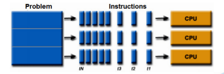

1.5. Mô hình thực thi tuần tự
Thời gian đầu, CPU chỉ có một lõi duy nhất, các ngôn ngữ khi đó sẽ theo mô hình lập trình tuần tự, điển hình là ngôn ngữ C. Ngày nay, với sự phát triển của công nghệ đa xử lý, để tận dụng tối đa sức mạnh của CPU, mô hình lập trình song song hay multi-threading) thường thấy trên các ngôn ngữ lập trình ra đời. Ngôn ngữ Go cũng phát triển mô hình lập trình song song rất hiệu quả với khái niệm Goroutines.
| Lập trình tuần tự | Lập trình song song |
|---|---|
 |
 |
1.5.1. Goroutines và system threads
Goroutines là một đơn vị concurrency của ngôn ngữ Go. Việc khởi tạo goroutines sẽ ít tốn chi phí hơn khởi tạo thread nhiều và đơn giản thông qua từ khóa go. Về góc nhìn hiện thực, goroutines và system thread không giống nhau.
Đầu tiên, system thread sẽ có một kích thước vùng nhớ stack cố định (thông thường vào khoảng 2MB). Vùng nhớ stack chủ yếu được dùng để lưu trữ những tham số, biến cục bộ và địa chỉ trả về khi chúng ta gọi hàm.
Kích thước cố định của stack sẽ dẫn đến hai vấn đề:
- Stack overflow với những chương trình gọi hàm đệ quy sâu.
- Lãng phí vùng nhớ đối với chương trình đơn giản.
Giải pháp cho vấn đề này chính là cấp phát linh hoạt vùng nhớ stack:
- Một Goroutines sẽ được bắt đầu bằng một vùng nhớ nhỏ (khoảng 2KB hoặc 4KB).
- Khi gọi đệ quy sâu (không gian stack hiện tại là không đủ) Goroutines sẽ tự động tăng không gian stack (kích thước tối đa của stack có thể được đạt tới 1GB).
- Bởi vì chi phí của việc khởi tạo là nhỏ, chúng ta có thể dễ dàng giải phóng hàng ngàn goroutines.
Go runtime có riêng cơ chế định thời cho Goroutines, nó dùng một số kỹ thuật để ghép M Goroutines trên N thread của hệ thống. Cơ chế định thời Goroutines tương tự với cơ chế định thời của kernel nhưng chỉ ở mức chương trình. Biến runtime.GOMAXPROCS quy định số lượng system thread hiện thời chạy trên các Goroutines.
https://yourbasic.org/golang/goroutines-explained/ https://medium.com/rungo/achieving-concurrency-in-go-3f84cbf870ca
1.5.2. Tác vụ Atomic
Tác vụ atomic là những tác vụ nhỏ nhất và không thể chạy song song được trong lập trình concurrency. Tác vụ atomic trên một vùng nhớ chia sẻ đảm bảo vùng nhớ chỉ có thể được truy cập bởi một Goroutine tại một thời điểm. Để đạt được điều này ta có thể dùng sync.Mutex.
import (
// package cần dùng
"sync"
)
// total là một struct atomic
var total struct {
sync.Mutex
value int
}
func worker(wg *sync.WaitGroup) {
// thông báo tôi đã hoàn thành khi ra khỏi hàm
defer wg.Done()
for i := 0; i <= 100; i++ {
// chặn các Goroutines khác vào
total.Lock()
// bây giờ, lệnh total.value += i được đảm bảo là atomic (đơn nguyên)
total.value += i
// bỏ chặn
total.Unlock()
}
}
func main() {
// khai báo wg để main Goroutine dừng chờ các Goroutines khác trước khi kết thúc chương trình
var wg sync.WaitGroup
// wg cần chờ 2 Goroutines khác
wg.Add(2)
// thực thi Goroutines thứ nhất
go worker(&wg)
// thực thi Goroutines thứ hai
go worker(&wg)
// wg bắt đầu đợi để 2 Goroutines kia xong
wg.Wait()
// in ra kết quả thực thi để xem chính xác không
fmt.Println(total.value)
}
Trong chương trình với mô hình multithread, rất cần thiết để lock và unlock trước và sau khi truy cập vào vùng critical section. Nếu không có sự bảo vệ biến total , kết quả cuối cùng có thể bị sai khác do sự truy nhập đồng thời của nhiều thread.
Sử dụng mutex chỉ để bảo vệ một biến số học là cách làm phức tạp và không hiệu quả, thay vào đó chúng ta nên dùng package sync/atomic:
import (
"sync"
// khai báo biến gói sync/atomic
"sync/atomic"
)
// biến total được truy cập đồng thời
var total uint64
func worker(wg *sync.WaitGroup) {
// wg thông báo hoàn thành khi ra khỏi hàm
defer wg.Done()
var i uint64
for i = 0; i <= 100; i++ {
// lệnh cộng atomic.AddUint64 total được đảm bảo là atomic (đơn nguyên)
atomic.AddUint64(&total, i)
}
}
func main() {
// wg được dùng để dừng hàm main đợi các Goroutines khác
var wg sync.WaitGroup
// wg cần đợi hai Goroutines gọi lệnh Done() mới thực thi tiếp
wg.Add(2)
// tạo Goroutines thứ nhất
go worker(&wg)
// tạo Goroutines thứ hai
go worker(&wg)
// bắt đầu việc đợi
wg.Wait()
// in ra kết quả
fmt.Println(total)
}
Ví dụ bên dưới minh họa cho việc sử dụng mutex và sync/atomic để hiện thực singleton pattern.
// khai báo một struct singleton
type singleton struct {}
var (
// khai báo một đối tượng singleton
instance *singleton
// khai báo một số atomic
initialized uint32
// dùng mutex để lock và unlock
mu sync.Mutex
)
func Instance() *singleton {
// nếu giá trị của initialized là 1, tức đối tượng đã được khởi tạo trước đó thì trả về nó
if atomic.LoadUint32(&initialized) == 1 {
return instance
}
// lock vùng critical section
mu.Lock()
// unlock khi ra khỏi hàm
defer mu.Unlock()
// bằng nil là chưa được khởi tạo, khác nil thì có Goroutines khởi tạo rồi
if instance == nil {
// lưu initialized là 1 để đánh dấu đã khởi tạo
defer atomic.StoreUint32(&initialized, 1)
// khởi tạo duy nhất 1 lần từ nay trở về sau
instance = &singleton{}
}
// trả về instance đã được khởi tạo
return instance
}
Chúng ta có thể refactor phần code trên thành sync.One như sau:
// Once là một struct atomic
type Once struct {
m Mutex
done uint32
}
// Hàm Do đảm bảo f được thực thi một lần duy nhất
func (o *Once) Do(f func()) {
// nếu giá trị o.done là 1, ta trả về ngay
if atomic.LoadUint32(&o.done) == 1 {
return
}
// lock các Goroutines khác
o.m.Lock()
// unlock nếu Goroutines hiện tại thực thi xong
defer o.m.Unlock()
// nếu o.done là 0 giống như mới khởi tạo
if o.done == 0 {
// lưu trữ o.done là 1 để đánh dấu
defer atomic.StoreUint32(&o.done, 1)
// thực thi hàm f()
f()
}
}
Dựa trên sync.One chúng ta sẽ hiện thực lại chế độ single piece như sau:
var (
instance *singleton
once sync.Once
)
func Instance() *singleton {
// thủ tục được truyền vào once.Do sẽ thực thi một lần duy nhất
once.Do(func() {
instance = &singleton{}
})
return instance
}
Package sync/atomic sẽ hỗ trợ những tác vụ atomic cho những kiểu cơ bản.
Cho việc đọc và ghi một đối tượng phức tạp, atomic.Value sẽ hỗ trợ hai hàm Load và Store để load và save dữ liệu, trả về giá trị và tham số là interface{} nó có thể được sử dụng trong một vài kiểu đặc biệt.
var config atomic.Value
// Lưu giá trị vào atomic
config.Store(loadConfig())
// định thời sau mỗi giây sẽ cập nhật lại
go func() {
for {
time.Sleep(time.Second)
config.Store(loadConfig())
}
}()
// Giải phóng 10 thread để lấy giá trị
for i := 0; i < 10; i++ {
go func() {
for r := range requests() {
c := config.Load()
}
}()
}
Đó là một mô hình producer và comsumer. Bên dưới thread sẽ sinh ra thông tin cấu hình gần nhất. Phía front-end sẽ có nhiều worker thread để lấy thông tin cấu hình gần nhất.
1.5.3. Mô hình thực thi tuần tự
Xem xét ví dụ như sau:
func main() {
// in ra Hello World trên một Goroutine khác
// tuy nhiên thông thường main sẽ chạy và kết thúc chương trình trước Goroutine
// dẫn tới dòng chữ Hello World không được in ra
go println("Hello World");
}
Có thể đồng bộ thứ tự thực thi nhờ vào channel như bên dưới:
func main() { // Goroutine (1)
// done ban đầu là một channel chưa có giá trị
done := make(chan int)
// chạy anynomous func trên một Goroutine khác
go func(){ // Goroutine (2)
// in ra dòng chữ Hello World
println("Hello World")
// đưa 1 vào channel, và bắt đầu dừng tới khi Goroutine (1) lấy 1 ra
done <- 1
}()
// lấy ra giá trị, nên phải dừng cho tới khi channel done có giá trị để lấy ra
<-done
}
1.5.4. Khởi tạo một Goroutine
Mệnh đề đứng sau từ khóa go sẽ tạo ra một Goroutine mới, ví dụ :
// biến a lưu trữ thông tin giao tiếp
var a string
// hàm thực thi việc in ra a
func f() {
print(a)
}
// hàm hello đầu tiên sẽ gán giá trị cho a, sau đó chạy f() trên một Goroutines khác
func hello() {
a = "hello world"
// khởi tạo một Goroutine mới để thực thi f()
go f()
}
1.5.5. Giao tiếp thông qua kênh Channel
Tác vụ gửi trên một unbufferred Channel luôn luôn xảy ra trước tác vụ nhận, dùng tính chất này cho việc đồng bộ giữa các goroutines.
// dùng channel done để đồng bộ thứ tự thực thi
var done = make(chan bool)
// thông điệp cần in ra
var msg string
func aGoroutine() {
// gán thông điệp vào biến msg
msg = "Hello World"
// truyền giá trị vào channel
done <- true
}
func main() {
// khởi tạo Goroutines
go aGoroutine()
// nhận giá trị từ channel
<-done
println(msg)
}
Với buffered Channel, đầu tiên sẽ hoàn toàn nhận K tác vụ trên channel xảy ra trước khi K+C tác vụ gửi được hoàn thành, với C là kích thước của buffer Channel, trước khi truyền đến Channel được hoàn thành.
Chúng ta có thể diều khiển số Gouroutines chạy concurrency dựa trên kích thước của bộ nhớ đệm control channel, ví dụ như sau:
// tạo ra một buffer channel có số lượng 3
var limit = make(chan int, 3)
func main() {
// lặp qua một dãy các công việc
for _, w := range work {
go func() {
// gửi 1 tới limit
limit <- 1
// thực thi hàm w()
w()
// lấy giá trị ra khỏi limit
<-limit
}()
}
// select{} sẽ dừng chương trình main
select{}
}
Dòng select{} cuối cùng là một mệnh đề lựa chọn một empty channel sẽ làm cho main thread bị block, ngăn chặn chương trình kết thúc sớm. Tương tự for{} và <- make(chan int) nhiều hàm khác sẽ đạt được kết quả tương tự.
1.5.6. Tác vụ đồng bộ không tin cậy
Như chúng ta phân tích trước, đoạn code sau sẽ không đảm bảo thứ tự in ra kết quả bình thường. Việc chạy thực sự bên dưới sẽ có một xác suất lớn kết quả sẽ không bình thường.
func main(){
go println("Hello World")
}
Với Go, bạn có thể đảm bảo rằng kết quả sẽ xuất ra bình thường bởi việc thêm vào thời gian sleep như sau:
func main(){
go println("hello world")
time.Sleep(time.Second)
}
Thread main sleep một giây sẽ đảm bảo đủ để Goroutine in ra dòng chữ "hello world" ra màn hình trước khi main thread thực thi xong. Tuy nhiên cũng không đảm bảo chắc chắn việc Goroutine thực thi xong sau một giây dẫn tới kết quả không như mong đợi.
Tính chất đúng đắn của của việc thực thi chương trình concurrency nghiêm ngặt không nên phụ thuộc vào các yếu tố không đáng tin cậy như tốc độ thực thi CPU và thời gian sleep.